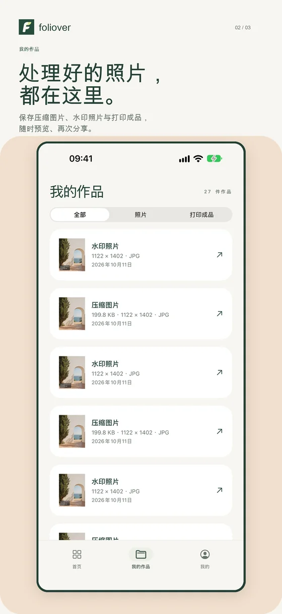

查找重复和相似照片
查看相似照片、截图、大文件和视频，确认后移除。被移除的照片进入系统相册的「最近删除」。
iPhone 与 iPad · iOS 17 或更高版本
先查看重复照片和不需要的日历事件，再决定删除哪些。也可以压缩图片、添加时间戳和制作打印排版。
五项工具均在本机运行，无需注册账号。
按任务选择工具。清理前可以查看扫描结果。
查看相似照片、截图、大文件和视频，确认后移除。被移除的照片进入系统相册的「最近删除」。
按日期范围查找重复事件、可疑邀请和订阅。可以逐条或批量选择可编辑的事件。
压缩图片、调整尺寸或转换格式，给照片添加可见的日期和时间，或裁剪人像并排版打印。
完成的照片导出会出现在「你的作品」里。之后还可以再次打开、核对或分享。

先由你复核并选择要移除的项目。确认移除后，照片进入系统相册的「最近删除」。
可以用扫描结果识别来源，只读订阅可能需要在 Apple 日历中取消订阅。
每项工具含一次成功的免费使用。完成一次可选分享可增加该工具的一次使用，也可一次性购买解锁。